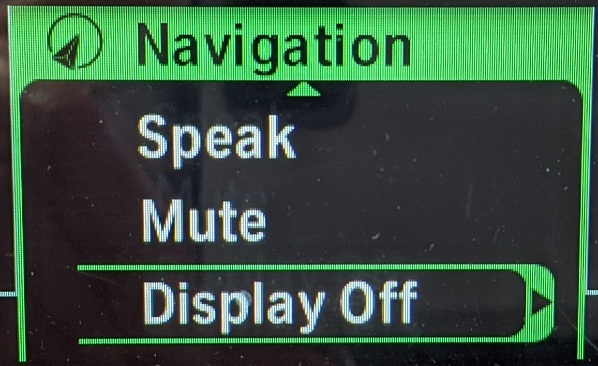

NAVIGATOR_TITLE
Version 1.0
Einleitung
Zunächst einmal vielen Dank, dass Du den WunderLINQ gekauft hast!
WUNDERLINQ_HW_INTRO_SUMMARY
Anforderungen
WUNDERLINQ_HW_INTRO_REQ_SUMMARY
- WunderLINQ
- BMW-Motorrad mit Navigations-Vorbereitung
Um Leistungsdaten oder Fehlermeldungen anzuzeigen, muss das Motorrad die Option Bordcomputer Pro besitzen.
WUNDERLINQ_HW_INSTALL_TITLE
NAVIGATOR_VIDEO_SUMMARY
WUNDERLINQ_HW_USAGE_TITLE
Untenstehend befindet sich die Zuordnung von Multi-Controller- zu Tastatureingaben. Falls Du den WunderLINQ an einer RT oder K1600 verwendest, nutze die Zuordnung am Ende dieses Abschnitts.

| Bedienung Multi Controller | Taste auf Tastatur | |
|---|---|---|
| Drehen nach oben | Pfeil nach oben | |
| Drehen nach unten | Pfeil nach unten | |
| Betätigung nach links | Pfeil nach links | |
| Betätigung nach rechts | Pfeil nach rechts | |
| Lange Betätigung nach links | ESC | |
| Lange Betätigung nach rechts | Eingabe (Enter) | |
| Blinker ausschalten | iOS Tastatur-Umschalter | WunderLINQ V2 oder höher |
| INDICATOR_CANCEL_LONG | KEY_MUTE | WunderLINQ V2 oder höher |
TFT_HEADING

TFT_NAV_DETECTED_TXT

TFT_NAV_MODE_TFT_TXT

TFT_NAV_MODE_NAV_TXT
Untenstehend befindet sich die Zuordnung von Multi-Controller- zu Tastatureingaben an einer RT oder K1600.
| Bedienung Multi Controller | Taste auf Tastatur | ||
|---|---|---|---|
 |
Zoom+ | Pfeil nach oben | |
 |
Zoom- | Pfeil nach unten | |
 |
Ansage | Pfeil nach links | |
 |
Seite | Pfeil nach rechts | |
|
Sprechen Doppelclick | ESC | |
|
Seite Doppelclick | Eingabe (Enter) | |
|  | Display aus | iOS Tastatur-Umschalter | WunderLINQ V2 oder höher |
 |
MUTE | KEY_MUTE | WunderLINQ V2 oder höher |
{kind=link}
Falls Dein Motorrad das TFT-Kombiinstrument besitzt, muss es in den Navigations-Modus gebracht werden, damit die Signale des Multi-Controllers an die Mount Cradle weitergeleitet werden.
WUNDERLINQ_HW_COMPATIBILITY_TITLE
NAVIGATOR_COMPATIBILITY_PREFACE
NAVIGATOR_COMPATIBILITY_WARNING
WUNDERLINQ_HW_MODEL_YEAR_TITLE
R1200GS/R1250GS/R1300GS
2013- NAVIGATOR_CONTROL
- NAVIGATOR_DATA
- NAVIGATOR_CONTROL
- NAVIGATOR_DATA
R1200RS/R1200R/R1250RS/R1250R
2015-Current- NAVIGATOR_CONTROL
- NAVIGATOR_DATA
F750/F850/F900
All model years- NAVIGATOR_CONTROL
- NAVIGATOR_DATA
S1000XR
2015–2019- NAVIGATOR_CONTROL
- NAVIGATOR_DATA
- NAVIGATOR_CONTROL
- NAVIGATOR_DATA
R1200RT/R1250RT/K1600
2013-2017- NAVIGATOR_CONTROL
- NAVIGATOR_DATA
- NAVIGATOR_CONTROL
- NAVIGATOR_DATA
- NO_CONTROL
- NAVIGATOR_DATA
NAVIGATOR_DATA_MATRIX

TROUBLESHOOTING_TITLE
KB_BGSOLIDLED_TITLE
KB_BGSOLIDLED_TXT
Zusätzliche Information
WunderLINQ-Firmware
WunderLINQ-Firmware Änderungshistorie
Unterstützung
Weitere Links
WunderLINQ Quellcode-Dokumentation
DISCLAIMER_TITLE
DISCLAIMER_LIABILITY
DISCLAIMER_INSTALL